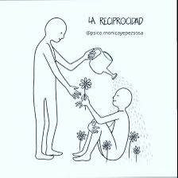
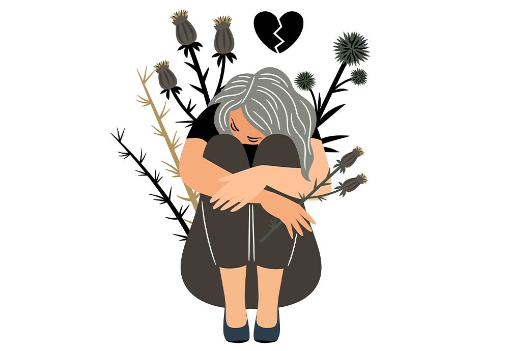
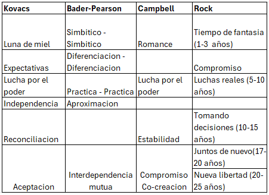
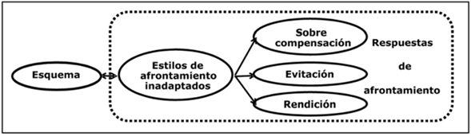

- Amor romántico
- Amor lúdico.
- Amistad.
- Amor razonado.
- Amor desinteresado.
- Amor excitante.
Derechos Sexuales y Reproductivos
- Parte integral de los derechos humanos.
- Universales e indivisibles.
- Promueven la justicia social y la dignidad de las personas.

Una guía integral sobre los aspectos fundamentales de la sexualidad, derechos y relaciones humanas.
ComenzarLa sexualidad es la integración de aspectos emocionales, intelectuales y sociales del ser sexual, promoviendo el desarrollo de la personalidad, la comunicación y el amor.
Es el estado general de bienestar físico, mental y social relacionado con el sistema reproductivo, sus funciones y procesos. Implica la capacidad de disfrutar una vida sexual satisfactoria, sin riesgos de procrear.
Conjunto de fases biológicas y psicológicas que contribuyen a la caracterización de la sexualidad de los individuos de una especie.
La persona es capaz de incorporar, adoptar, corregir y modificar un sistema de valores sexuales propio que le permita ser lo más libre y responsable en el ejercicio de su salud sexual.
Esto incluye:
Físicas o biológicas, cromosómicas, gonadales, hormonales y anatómicas
Esta hipótesis sostiene que los individuos tienden a desarrollar relaciones románticas con personas que son similares a ellos en atractivo físico. Sin embargo, si hay parejas que no encajan, estudios sugieren que las personas que juzgan estas parejas tienden a atribuirles atributos como salud, inteligencia o éxito al menos atractivo.
Hace referencia a la aceptación de diferentes criterios para valorar el mismo comportamiento sexual en hombres y mujeres. (Milhausen y Herold, 2001)
Las personas tienden a vivir entre personas que tienen orígenes similares, lo que influye en la atracción, amistad y relaciones amorosas.
Es un determinante importante de la atracción. Tendemos a ser más cálidos y sinceros con los desconocidos que creemos que son como nosotros.
Existen varios tipos de amor:
Apego profundo o afecto no sexual.
Generosidad y el deseo de compartir y dar desinteresadamente.
Respeto, más que deseo sexual, lo más cercano a la amistad.
Pasión, deseo repentino y apasionado.
Existen varios tipos de amor:
A través de cuentos de hadas, novelas románticas, etc.
Estado intenso de absorción y excitación psicológica.
Ver a la otra persona con cariño y cuidado.
Ayuda a evaluar el grado en que una persona es romántica o realista ante el amor
La soledad es un estado de aislamiento doloroso o un sentimiento de estar separado de los demás. Factores como la falta de habilidades sociales, empatía, miedo al rechazo, y una alta sensación de control externo pueden contribuir a la soledad.
Las personas tienden a elegir compañeros basados en el acuerdo de los roles mentales.
El amor duradero ocurre cuando las personas perciben un intercambio ventajoso entre lo que reciben y lo que ofrecen.
Las parejas pasan por etapas antes de casarse: atracción física, valores compartidos, y compatibilidad de actitudes.
Aunque la vida en pareja se mantiene, se ha experimentado un cambio en las formas de llevarla a cabo: más parejas sin hijos, uniones de tipo no tradicional, familias reconstruidas y parejas del mismo sexo.
Muchos han sido los investigadores que han descrito el desarrollo de las relaciones románticas en términos de fases o etapas (Berscheid & Reis, 1998; Dindia & Timmerman, 2003; Hendrick & Hendrick, 200; Honeycutt & Cantrill, 2001; Levinger, 1980).
A partir de estos trabajos, podemos construir un modelo de las relaciones románticas en cinco etapas:
La investigación sugiere que los miembros de la pareja con baja autoestima tienen a albergar sentimientos de poca seguridad en si mismos que pueden interferir en el desarrollo y el mantenimiento de relaciones románticas (Murray & Holmes, 2000).
Existen ciertos factores que facilitan que una pareja sea un equipo sano que trabaja conjuntamente. Beck (1990) ya nos dice que el amor no es suficiente para que una relación pueda tener futuro y sea satisfactoria.
Una pareja feliz se caracteriza por:
La evolución del matrimonio se puede observar desde diferentes perspectivas y autores.
Tenemos que reconocer que las raíces de las discordias interpersonales se asientan en esquemas y estrategias de evitación de estos esquemas. Los esquemas disfuncionales se convierten en bombas retardadas para la relajación formadas en la infancia, pero activadas por amenazas, conflictos y estresores actuales. Generan expectativas negativas sobre uno mismo y los demás y llevan a los miembros de la pareja a evitar el esquema nocivo mediante respuestas de afrontamiento disfuncionales (Mckay & Skeen, 2012).
Algunos errores comunes en las relaciones de pareja incluyen:
Utilización de esquemas cognitivo-afectivos para afrontar problemas.
Incluye abordajes racionales, impulsivos o evitativos.
Evaluar resultados y preparar un plan para la solución.
Incluye distancia, postura, contacto visual, gesticulación.
La pertinencia y la forma de comunicar el contenido verbal son importantes.
Socialización Sexual
El concepto de socialización sexual se refiere al proceso mediante el cual las personas aprenden e interiorizan los conocimientos, creencias, metas, expectativas, valoraciones, percepciones, intereses, actitudes, normas y significados asociados con el hecho de ser hombre o mujer en la sexualidad.
Agentes de Socialización
Son los factores sociales que influyen en este proceso.
Familia
Amistades
Medios de comunicación